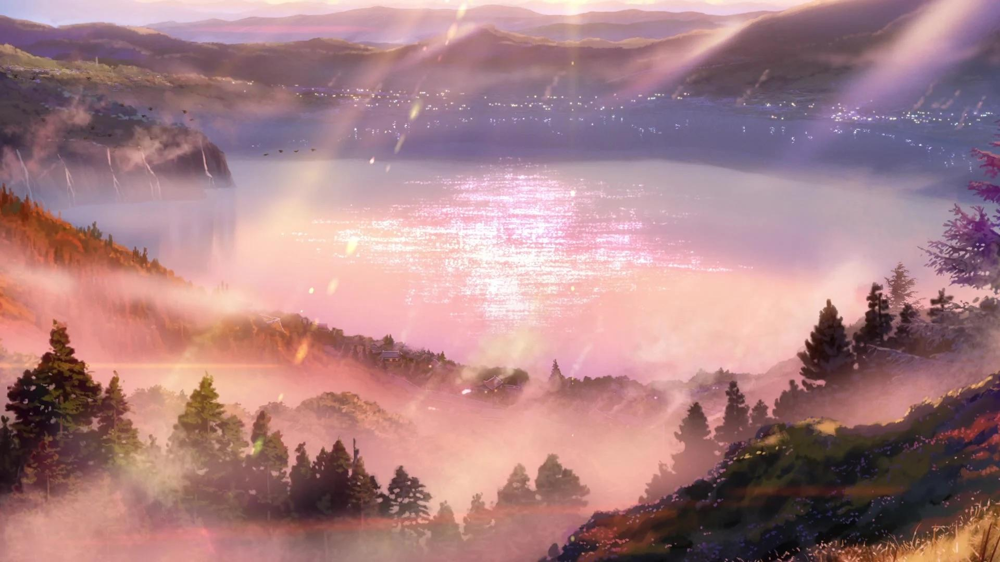
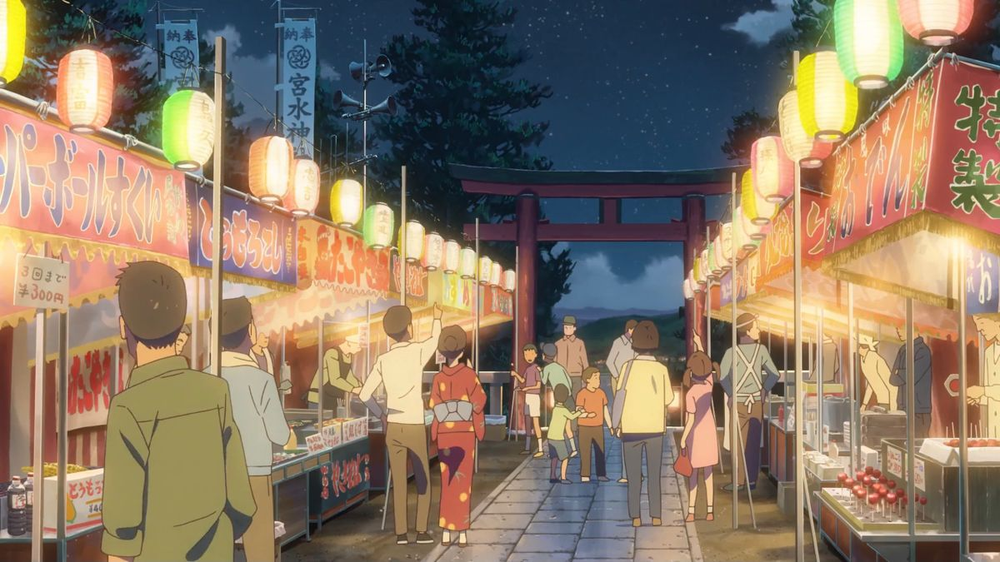

Visit Lake Itomori
Itomori Lake, the fictional town’s centerpiece, is surrounded by peaceful forests and rolling mountains. Visitors can walk the trails around the lake, enjoy a picnic by the water, or capture breathtaking reflections of the sky, just like in the iconic comet scene. The calm setting invites quiet moments of reflection, as if you could feel the connection between time and memory.
Visit the Autumn Festival
Every year, the town celebrates an autumn festival filled with food stalls, lanterns, and traditional music. Locals wear yukata as they gather at the shrine to give thanks and watch dances that honor the gods. The lively yet nostalgic atmosphere feels straight out of Your Name, reminding visitors of Mitsuha’s world and the timeless rhythm of small-town Japan.
Hike up to the Shrine

Your Name is set primarily in Tokyo (東京) but also features locations in Gifu Prefecture (岐阜県) while taking inspiration from other places such as a picturesque lakeside city in Nagano Prefecture (長野県) and a charming volcanic island in the Izu Island chain (伊豆諸島).